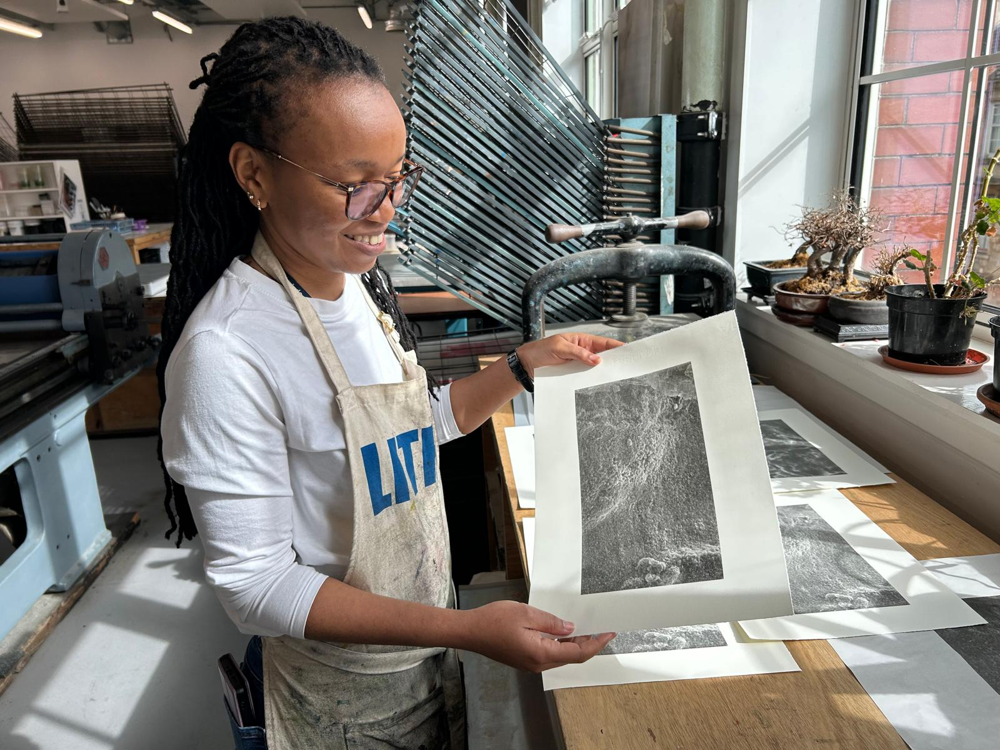
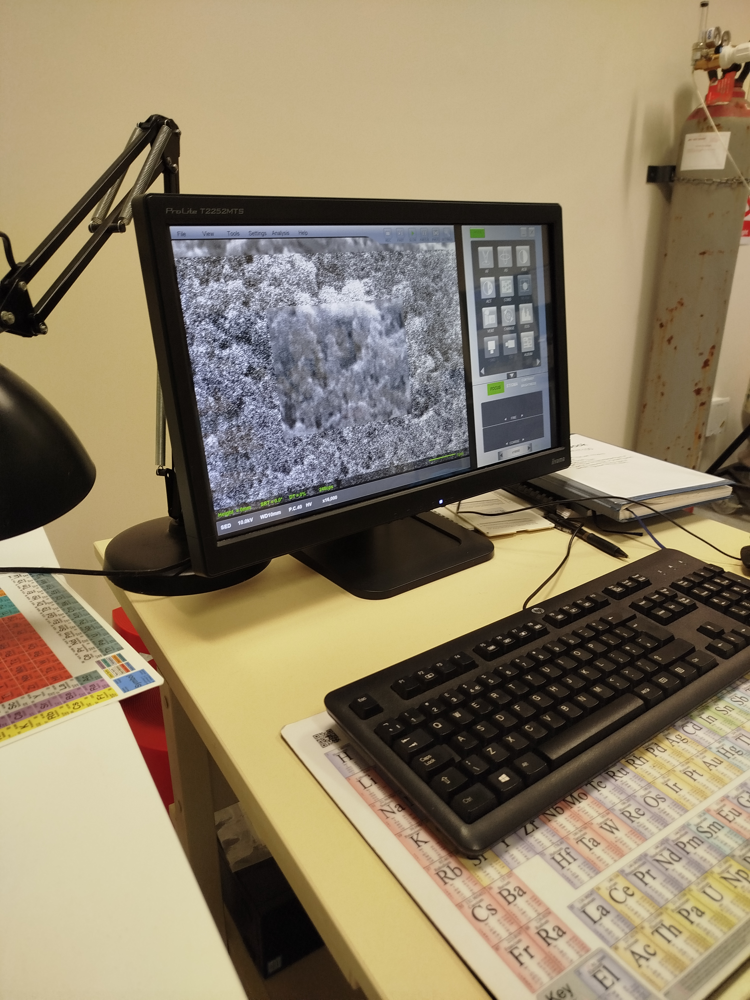
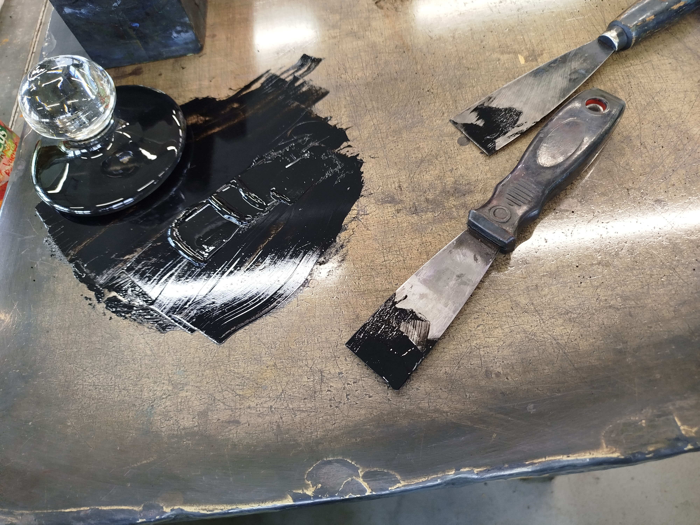
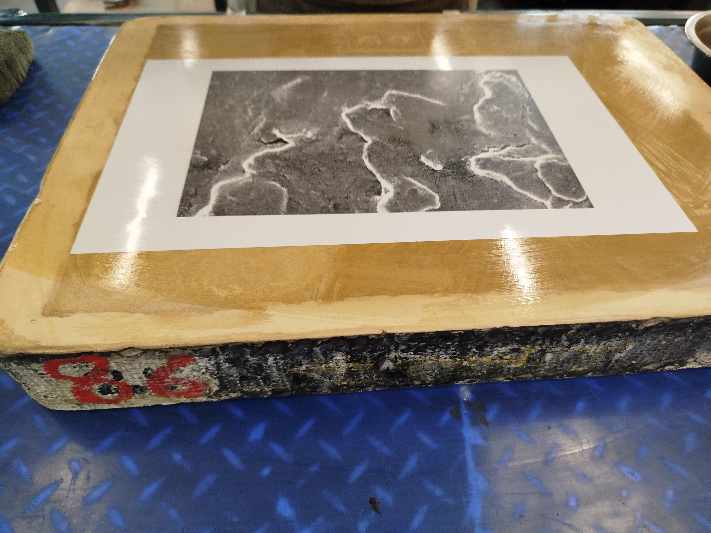
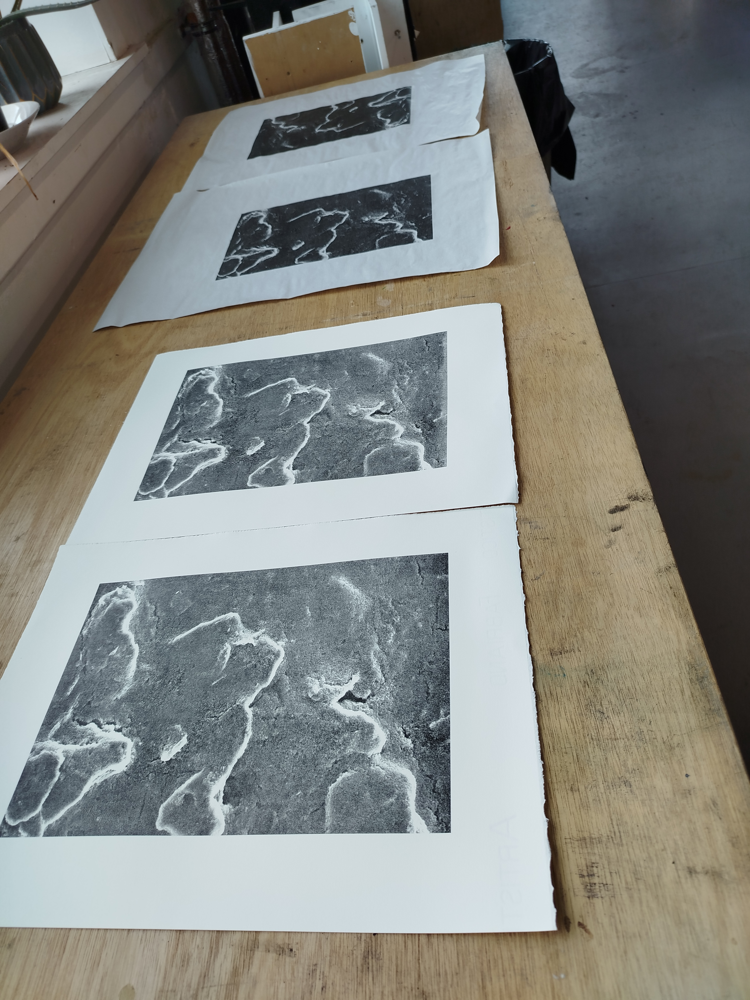
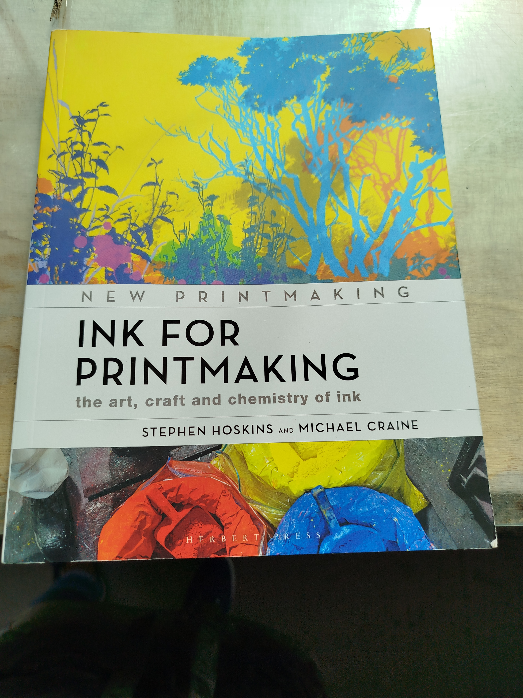

I started with a soil sensor.
The goal was to develop a carbon-based conductive ink that could be printed into electrodes for a low-cost soil sensing platform. That meant developing the ink, printing the electrodes, testing their functionality and understanding what was happening at the material surface.
What I didn't expect was that the journey would eventually take me into an art studio.
From carbon ink to electrode
The conductive ink had to be developed from scratch using carbon-based materials including carbon black and graphite. Getting the formulation and printing process right involved plenty of experimentation and testing.
The project was being carried out in collaboration with the Glasgow School of Art where I had the opportunity to work alongside people with very different expertise from my own.
Aoife McGarrigle brought expertise in lithography while Edwin Pickstone was the go-to person for the practical side of printing.

A closer look
Once the electrodes had been printed and their functionality assessed I examined them using a scanning electron microscope.
The SEM revealed the particulate nature of the carbon-based material at a scale that is impossible to appreciate with the naked eye.
Scientifically the images helped me understand the electrode.
But they also looked unexpectedly beautiful.
That raised a slightly unusual question:
What if we turned one of these scientific images into art?

When science meets lithography
An SEM image of the electrode became the starting point for a lithographic print.
Materials from the sensor work also found their way into the creative process. Carbon black and graphite were used with egg yolk as a binder to prepare the ink for the artwork.
A scientific image that had originally been viewed on a computer screen was transformed into something physical. Something that could be printed, handled and viewed from an entirely different perspective.


Science feeds art. Art feeds science.
What I found most interesting was that the exchange wasn't one-way.
The science gave the artwork its material, its image and its story.
But the artistic process also changed how I looked at the science. The particles, surfaces, textures and patterns that mattered scientifically could also be understood visually.
It reminded me that interdisciplinary research isn't always about putting two disciplines neatly side by side.
Sometimes one discipline simply gives you a new way of seeing another.

The original plan was to develop a soil sensor.
The artwork was definitely not part of the plan.
But perhaps that's the point.
Sometimes research takes an unexpected turn and that turn can reveal something you weren't looking for.
In this case a soil sensor became art.